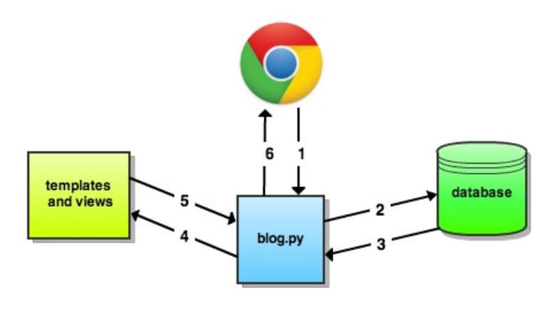

Introduction to programming using Python
Session 14
Matthieu Choplin
- Building a blog application using the flask framework
Objectives
- After a user logs in they are presented with all of the blog posts.
- Users can add new, text-only blog entries from the same screen, read the entries themselves, or log out.
Setting up the project
Create a new project in Pycharm that you call "flask-blog"
Within that project, create the following structure:
├── blog.py ├── static │ ├── css │ ├── img │ └── js └── templates
Structure
- All the logic will be in the blog.py file
- The "static" directory holds static files (anything that is not dynamic) like JavaScript files, CSS stylesheets, and images
- Finally, the "template" folder houses all of our HTML files.
blog.py: the application controller.
Flask works with a client-server model. The server receives HTTP requests from the client (the web browser), then returns content back to the client in the form of a response
Installing flask
If you do not have flask installed. From Pycharm, go to File / Settings / Project / Project interpreter / Search for the "Flask" package and install it
Flask application structure: a MVC

- Model
- View
- Controller